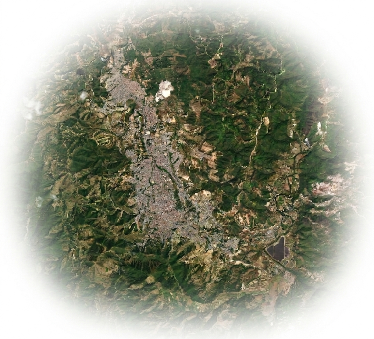

Gestión del riesgo
Consulta mapas de amenazas, vulnerabilidad y riesgo para apoyar la toma de decisiones.
Información territorial para planificación, gestión y participación
Bienvenido al
Explora información geográfica y temática del territorio para la planificación, gestión y participación ciudadana.

Tu asistente del GeoVisor. ¿En qué puedo ayudarte hoy?

Consulta mapas de amenazas, vulnerabilidad y riesgo para apoyar la toma de decisiones.

Infórmate y participa en los espacios de diálogo y construcción colectiva del territorio.

Consulta los planes de ordenamiento territorial y contenidos clave del municipio.

Accede a información sobre cuencas hidrográficas, planificación y manejo ambiental.

Integra aquí información vial, indicadores, reportes y análisis temáticos del territorio.
En esta sección se mostrará el contenido relacionado con el Plan de Ordenamiento Territorial: glosario, objetivos, componentes, cartillas, normativa y material enviado por el equipo.
Aquí puedes incorporar la ley, decretos y acuerdos municipales que rijan el POT en Colombia y en Ocaña.
Esta sección funcionará como página informativa para integrar conceptos, glosario, normativas, documentos y aportes del equipo relacionados con el Plan de Ordenación y Manejo de Cuencas.
Aquí se podrá mostrar información sobre procesos participativos, espacios comunitarios, materiales pedagógicos, rutas de participación y resultados del trabajo con la comunidad.
Consulta el geovisor, las capas de riesgo, conceptos del POT, POMCA y participación ciudadana.